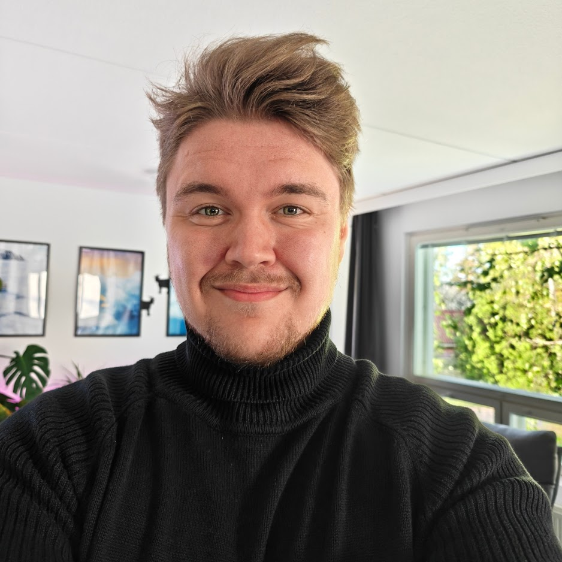

|
Solution-oriented technical specialist who ships clean web projects and builds reliable technical systems.

Technical specialist with a broad skillset spanning web development and IT infrastructure. I enjoy taking projects from initial idea through to production, while also helping teams keep their systems stable and well-maintained.
I’m comfortable working across both development and operations. I make good use of modern tools, including AI, to work faster without cutting corners, and I have a practical, hands-on approach to solving technical problems. Building accessible experiences is important to me, but it’s one part of a wider focus on delivering reliable, well-thought-out solutions.
Outside of work I stay active. I lift weights five times a week. I’ve been riding motorcycles for nine years and really value the focus and sense of freedom it gives me.
I’ve always enjoyed working with my hands. I like taking things apart, figuring out how they work, and fixing them when they break, whether it’s computers, motorcycles, or random pieces of hardware.
That same curiosity carries over into my work. I tend to dig deeper into problems rather than just applying quick fixes, and I get satisfaction from building things that actually hold up over time.